Auf dem Ochsen-, Heeresweg oder Hærvejen von Kiel nach Aalborg
Vorbereitung
In der ersten Woche der Herbstferien haben wir geplant, von Kiel nach
Skagen zu radeln. Das hat dann wettertechnisch nicht ganz geklappt.
Ein nahender Orkan hat uns dazu gebracht, die Tour in Aalborg zu
beenden und mit dem Zug zurück zu fahren.
Desweiteren war der Plan, in Dänemark in Sheltern zu
übernachten oder zu zelten. Die Shelter App bietet eine
gute Vorschau auf die Gegebenheiten.
Den Weg von Kiel nach Flensburg zum Anfang des Heeresweges haben
wir mit Naviki geplant.
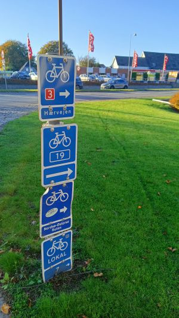
Ab der Grenze hervorragend beschildert
18.10.2025 - 98km - Kiel - Internierungslager Frøslev
Von Kiel bis Dänemark
Wir starten morgens in Kiel mit vollgepackten Rädern. Trangia Kocher,
Trekkingzelt, Isomatten, Schlafsäcke und Lebensmittel für zwei bis
drei Tage.
Wir rollen zuerst an Gettorf vorbei nach Eckernförde, von dort geht
es in Richtung Schleswig. Schleswig lassen wir aber links liegen, weil wir
in Missunde die Fähre über die Schlei nehmen.
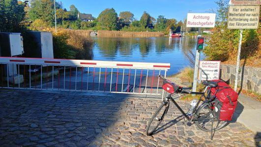
Fähre in Missunde
In Böcklund (ja, die mit den Würstchen) machen wir Mittagspause vor
dem Jugendzentrum.
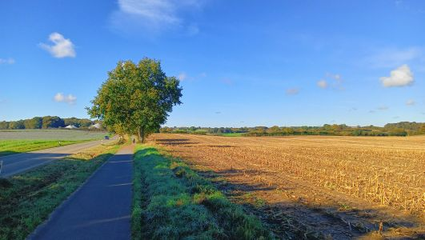
Auf dem Weg Richtung Flensburg
Nachmittags erreichen wir Flensburg und genehmigen uns bei einem Asiaten
ein Tellergericht. Morgen ist schließlich Sonntag. Dass die Supermärkte
in Dänemark auch Sonntags geöffnet haben, sehen wir ja erst
morgen.
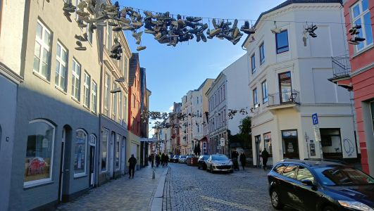
Flensburger Innenstadt
In Flensburg radeln wir über die Grenze, ohne es zu merken, und finden
auch schnell den ersten Radwegweiser mit der Route Nummer 3.
Der Heeresweg oder Hærvejen. Schnell erreichen
wir das ehemalige Internierungslager Frøslev.
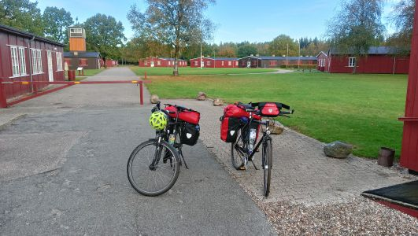
Internierungslager Frøslev
Dort gibt es zwei Biwakplätze.
Wir suchen ein wenig, bis wir den Biwakplatz Karsten Thomsens Plads gefunden
haben. Er befindet sich abseits des Weges nahe einer Hundeauslaufwiese.
Es gibt dort einen Wasserhahn, ein Trockenklo, eine Feuerstelle, Bank und Tisch
und Platz für Zelte. Einen Shelter gibt es dort nicht, aber das wussten
wir Dank der Shelter App schon im voraus.
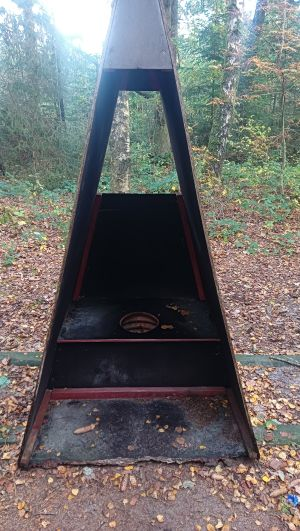
Trockenklo
Wir bevorzugten allerdings das Klo im Internierungslager.
Das Zelt ist schnell aufgebaut. Dank des Restaurantbesuches in Flensburg
brauchen wir uns heute nichts mehr zu kochen. Wir putzen also nur noch die
Zähne und verkriechen uns in die Schlafsäcke. Die Nacht verspricht
recht kalt zu werden.
19.10.2025 - 118km - Padborg - Bække
Sonnig aber kalt und der erste Shelter
Morgens befindet sich eine dünne Schicht Rauhreif auf unserem Zelt und
den Fahrradtaschen. Der Trangia Kocher für den Kaffee startet widerwillig.
Von Flensburg haben wir uns noch 4 Brötchen mitgenommen, die nun
vernichtet werden.
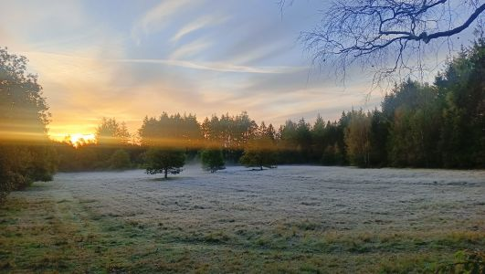
Ein kalter Morgen
Das Zelt und die Ausrüstung sind schnell wieder verstaut. Bevor wir
weiterfahren, fahren wir noch kurz zum Internierungslager zurück. Dort
gibt es eine beheizte Toilette mit Steckdose, um die Smartphones nachzuladen.
Nach kurzer Morgenwäsche geht es dann endlich los. Da es heute sonnig
aber kalt werden soll, befestigen wir unsere USB-Solarzellen auf den
Packtaschen, um während der Fahrt die Powerbanks zu laden.
Der Weg Nummer 3 ist gut markiert. Wir fahren durch Kliplev, Hjordkær
Rødekro, Hovslund und Vojens nahezu parallel zur E45, und dann geht es leicht westlich
weiter und durch Vejen.
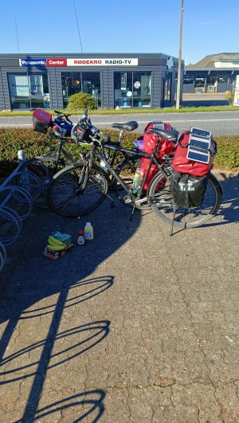
Supermarktstopp in Rødekro
In Rødekro stellen wir fest, dass wir auch Sonntags einkaufen
können, und holen uns ein paar Bananen, Müsliriegel und andere
Dinge.
Die Radwege sind durchweg gut. An einer Stelle gibt es sogar Solarlampen im
Asphalt. Ab und zu verläuft der Weg aber auch auf Schotterwegen.
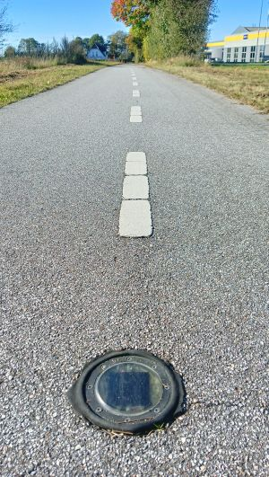
Solarleuchten im Radweg
Hinter Vejen überqueren wir die E20. Hinter Asbo kommt dann Bække
und kurz hinter Bække befindet sich unser Übernachtungsplatz. Es
handelt sich um ein Gelände der dänischen Pfadfinder. Es gibt
eine abseits gelegene Zeltwiese mit zwei Sheltern. Am Haupthaus gibt es
einen Wasserhahn und eine Toilette mit Waschbecken und Steckdose. Mehr
brauchen wir nicht. Bis auf eine zeltende Person auf dem Pfadfindergelände
sind wir alleine.
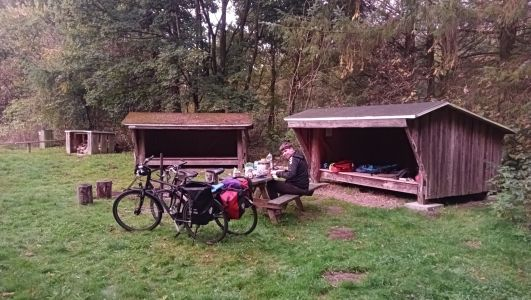
Shelter- und Zeltplatz in Bække
Zum Abendessen gibt es Nudeln mit Tomatensoße, und wir spielen noch
ein wenig Ruhrpottquartett. Im Shelter lässt sich gut schlafen. Er gibt auch
genügend Nägel, um unsere Radklamotten zum Trocknen aufzuhängen.
20.10.2025 - 58km - Bække - Koutrup
Wetterwechsel
Wir starten gegen halb zehn. Der Himmel ist bedeckt. Das Wetter wechselt.
Passend zur Mittagspause kommen wir an einem Shelter vorbei, der uns recht
gelegen kommt. Es fängt leicht an zu regnen, und der Shelter hat sogar
eine Inselsolaranlage mit der Möglichkeit, die Smartphones zu laden.
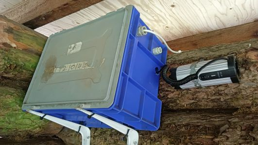
Solarbetriebene Lademöglichkeit
Heute ist der verfluchte dritte Tag, und wir beschliessen, nicht so viele
Kilometer wie in den vergangenen Tagen zu machen. Deswegen erreichen wir
den Shelter in Kouvtrup schon um 14:30 Uhr.
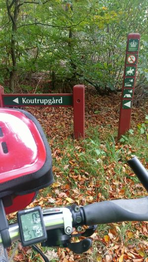
Abzweig zu unserem Übernachtungsplatz
Da er gerade trocken ist, hängen wir das Zelt zum Trocknen auf, und
machen uns ein kleines Feuer an der Feuerstelle. Vom Shelter aus geht man
quer über eine Kuhweide zum Haupthaus. Dort gibt es eine Toilette
mit (kalter) Dusche und auch die Möglichkeit, seine Powerbanks
auszuladen. Ein perfekter Platz. Wir sind wieder alleine, und es kommt
nur eine Spaziergängerin vorbei.
21.10.2025 - 93km - Koutrup - Rødding
Reichlich Höhenmeter
Der Tag startet feucht, und es wird auch nicht besser. Immer, wenn wir
die Regensachen ausziehen, fängt es sofort an, stärker zu
regnen. Also lassen wir sie einfach an. Kalt genug ist es ja.
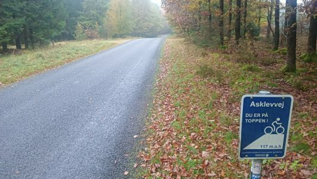
Auch in Dänemark gibt es 15% Steigung
Zwischenzeitlich wird uns aber doch warm. Es sind reichlich Höhenmeter
zu bewältigen. Mittagspause machen wir gegenüber eines kleinen
Supermarktes, bei dem wir ein paar Bananen und Müsliriegel kaufen.
Wir sitzen auf dem Dorfplatz, und unter der Bank befindet sich sogar eine
Steckdose. Die Smartphones bekommen wieder etwas Energie. Bei dem Wetter
funktionieren unsere Solarzellen ja nicht.
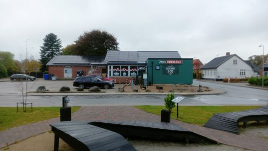
Dorfzentrum von Kragelund
Unseren Shelter in Røddinge erreichen wir um 17:30 Uhr. Er liegt unterhalb einer
Straße an einem See. Zu dieser Jahreszeit sind wenig andere
Radfahrende unterwegs, so dass wir auch hier wieder alleine bleiben.

Shelter in Røddinge
Etwa 500 Meter entfernt befindet sich ein Toilettencontainer mit
Trinkwasser und Strom.
22.10.2025 - 78km - Rødding - Dall
Regen, Regen, Regen
Heute ist es nicht mehr so hügelig, aber es regnet sich so langsam
ein. Bei diesem Wetter macht es deutlich weniger Spaß.
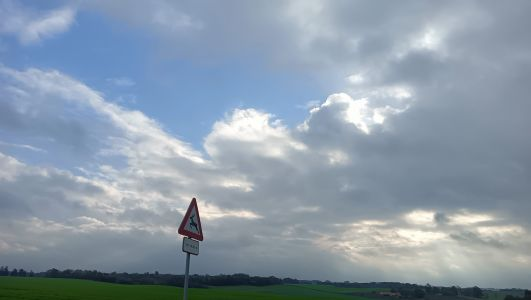
Der einzige blaue Fleck für diesen Tag
Wir erreichen gegen 15 Uhr den Shelter in Dall. Er liegt direkt am
örtlichen Versammlungsplatz. Gegenüber liegt der Friedhof.
Dort gibt es eine Toilette und Trinkwasser.
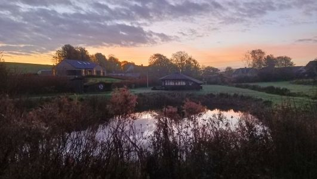
Shelter in Dall
Noch am selben Abend entscheiden wir uns dafür, die Tour in Aalborg
abzubrechen und nicht bis nach Skagen weiter zu fahren. Es wären
noch weitere 2 Tage, und der Wetterbericht spricht nur von Regen. Dazu
kommt dann noch ein nahender Orkan.
In der Vergangenheit war es wesentlich günstiger, mit der Bahn bis
Padborg zu fahren und dann mit dem Rad über die Grenze nach
Deutschland. Wir finden aber in der Bahn App für den nächsten
Tag einen Zug, der uns für 100 Euro zu zweit mit den Rädern
direkt nach Kiel bringt.
23.10.2025 - 26 - Dall - Aalborg - Kiel
Aalborg und Rückreise
Es sind heute noch 15 km bis nach Aalborg. Der Bahnhof ist schnell
gefunden, und wir kaufen noch ein paar Souveniers ein. In Aalborg gibt
es dann auch einen spontanen Gleiswechsel, was mit den vollgepackten
Rädern eine Herausforderung ist.
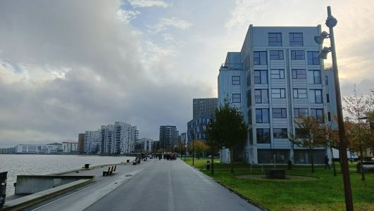
Aalborg
Umsteigen müssen wir in Kolding und Flensburg. In Flensburg
lassen wir die unsinnigen Grenzkontrollen links liegen und ignorieren
die Polizeibeamten. Wir hätten sonst auch den Zug nach Kiel
verpasst.
An der Schleibrücke Lindaunis müssen wir noch einmal den Zug
wechseln, weil wir wegen Bauarbeiten zu Fuß über die
Brücke müssen.
Vom Kieler Hauptbahnhof sind es dann noch 10 km per Rad bis nach Hause.
Dort gibt es dann nach Tagen die erste wohlverdiente Dusche.
Links:
Schleifähre Missunde
Internierungslager Frøslev
Dänisches Amt für Naturverwaltung
Udinaturen
Karsten Thomsens Platz
Shelter- und Zeltplatz Bække
Koutrup Waldshelter
Shelter am Røddinge See
Shelter in Dall
Aalborg
|